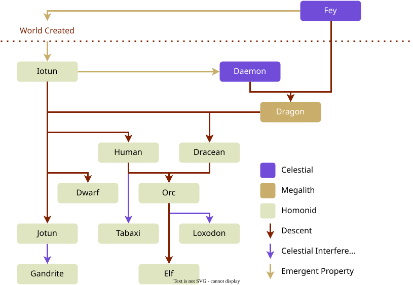

Species
Iuncterra is home to a wide variety of sapient creatures.
Phylogeny
The diagram below shows a phylogenic diagram for the origins of each sapient species in Iuncterra:

Ageing
Different species age at different rates. Taking the rate of ageing in humans as a baseline, equivalent ages of other species can be calculated by the following multipliers:
| Species | Approx. Lifespan | Multiplier |
|---|---|---|
| Tabaxi | 50 | x1.6 |
| Halfling | 60 | x1.33 |
| Human | 80 | x1.0 |
| Iotun | 80 | x1.0 |
| Jotun | 100 | x0.8 |
| Dracean | 200 | x0.4 |
| Dwarf | 240 | x0.33 |
| Orc | 300 | x0.27 |
| Loxodon | 320 | x0.25 |
| Gandrite | 340 | x0.24 |
| Elf | 400 | x0.2 |
When parents of two different species have a child, the results can vary when it comes to ageing. Generally a child of a long lived species with a shorter lived species will gain only a slight increase to their lifespan, particular when elven genes are concerned. The genes for short lifespans are generally dominant.
Contents
🡐 LoreDracean Dwarf Elf Gandrite Halfling Human Iotun Jotun Leonin Loxodon Orc Tabaxi